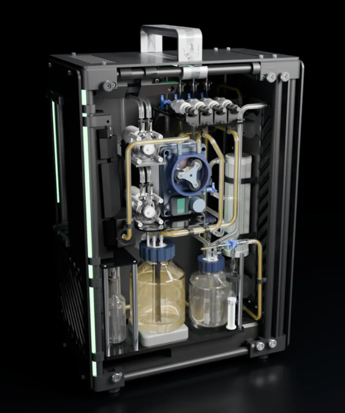
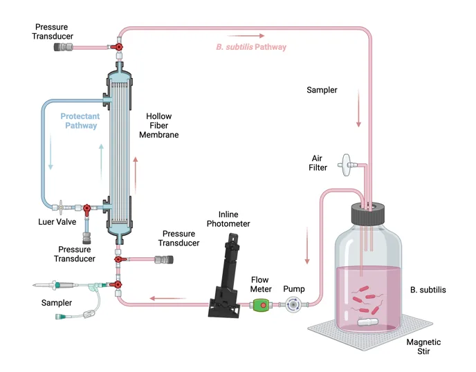

ReLEAF is an optogenetic bioreactor system that enables on-demand protection against combined biotic and abiotic crop stresses through cell-free delivery of protective proteins.
Our target market is conventional smallholder farmers; a single stress event can potentially wipe out an entire season’s income with no recovery mechanism or backup plan. The team is aware that not a lot of money can be made out of it, but our vision is to have a social impact, and to empower farmers, which is why we chose this business model instead of a traditional one. Our product is unlikely to be more effective than the current best chemical solutions; due to our product including GMOs, it will face legal hurdles.
ReLEAF is an optogenetic bioreactor system that enables on-demand protection against combined biotic and abiotic crop stresses through cell-free delivery of protective proteins. Our mission is to strengthen agricultural resilience by reducing crop losses while decreasing dependence on chemical interventions.
What we plan to do
Deploy a sealed bioreactor system at the farm level that continuously monitors soil and environmental conditions, detects when stress exceeds thresholds (heat, salinity, pathogens), produces and applies protective proteins directly to the crop. The system operates with minimal farmer intervention and integrates seamlessly into existing irrigation systems.
What the product does
The bioreactor houses engineered Bacillus subtilis that synthesizes three complementary protective proteins: LEA 14 (abiotic stress protection), ACCD (ethylene reduction), and BoPEP4 (antifungal defense), triggered by green/red light signals when stress is detected. A hollow-fiber membrane ensures biological containment: bacteria stay inside, only protective metabolites exit into soil.
Mission statement: ReLEAF strengthens agricultural resilience by enabling on-demand protection against combined biotic and abiotic stresses through an optogenetic bioreactor, shifting from reactive chemical management to proactive, precision crop defense while reducing environmental contamination.
Vision: Every farmer is a biomanufacturer.
Our vision is to empower every farmer to have their small bacteria factory for producing biostimulants that help plants withstand environmental stresses. Through our bioreactor system, we wish to reduce long bioprocessing times and challenges, so that farmers can benefit from science at a faster rate than the present.
Climate stresses & vulnerability of agriculture
In a world of climate change, where seasons shift dramatically, temperatures fluctuate uncontrollably, soil salinity escalates, and fungal outbreaks intensify, humanity is forced to choose between immediate technological adaptation or multi-system crop failure in modern agriculture. Abiotic stresses, primarily heat and soil salinity, already cause an estimated 50% of worldwide crop yield losses annually, and climate change further exacerbates the severity and frequency of these issues (Bray et al., 2000; Mittler, 2002). For example, a 1 degree Celsius rise in average growing season temperatures reduces rice yield by 6.2%. Additionally, over 20% of the world’s irrigated farmland is already significantly affected by salinity, with an additional 3 hectares becoming unproductive every minute (Zhao et al., 2017). Small farmers produce approximately 70-80% of the global food supply, a proportion that rises to over 80% of all consumed food in many developing sub-regions (Ricciardi et al., 2018). The focus on small farmers is critical because they represent the backbone of local food sovereignty. In East Asia, including Taiwan, where over 90% of agricultural holdings are small-scale family operations averaging less than 1 hectare, these small farmers directly supply more than 80% of domestic fresh vegetables and fruits (Ministry of Agriculture, 2024). In Taiwan’s Dahu area, which produces about 90% of the country’s strawberries, rising temperatures and typhoon rainfall have been linked to lower first-period yields (Chang, 2020), while year-round tomato production in the subtropical lowlands is challenged by summer heat and a growing risk of salinity stress, with yield strongly suppressed even by short-term mild salinity in a highly heat-tolerant cultivar (Liu et al., 2014). For all the smallholder farmers that make up over 500 million smallholder farms, these staggering numbers mean that a single stress event can potentially wipe out an entire season’s income with no recovery mechanism or backup plan.
One of the key issues that make this crisis particularly acute is the combination of heat and salinity stress. Under field conditions, these stresses occur repeatedly, compounding cellular damage in ways that can’t be triggered by either stress independently. At the same time, plants that are weakened by stress can become vulnerable to pathogens, meaning that even a miniscule instance of salinity or heat can initiate a disease outbreak. Current agricultural systems are not equipped to handle such crises - either current solutions damage soil health and burden farmers with costs they can’t afford, or these solutions are reactive and too slow, only able to be applied after visible damage has occurred. Chemical solutions such as fungicides (ex. mancozeb, azoxystrobin, or copper based sprays) and synthetic fertilizers remain the most accessible and affordable remedies, but they only further destroy the conditions of the already stressed plants because they are only broadly applied after visible and often irreversible crop damage has already occurred.
Product description
Product usage and function
Our field-deployable bioreactor is a sealed system containing engineered Bacillus subtilis that uses a hollow-fiber membrane filtration system to deliver protectant molecules directly into the root zone of vegetable crops. By restricting all living bacteria inside the device while allowing only the secreted protectants to exit, it automates crop defense without the need for manual spraying or application. The device functions with minimal farmer intervention, requiring only occasional maintenance checks or a cartridge replacement when the protectant runs low. It is fully automated by an Arduino-based control unit, a circulation pump, a temperature sensor, a salinity/EC sensor, and a green and red LED optogenetic control system. This integrated tech stack continuously monitors environmental conditions and automatically activates specific stress-response modules the moment predefined thresholds are breached.

Our current final product, the most simple sellable version of our bioreactor
Leaf Humidity Sensor
The leaf humidity sensor sits on the leaves of crops and tells us the humidity of the leaf surface. The sensor then sends its readings to our AIoT system, which uses the readings to forecast when the crop is going to need protectant. By using the sensor data, the AIoT system also predicts upcoming weather conditions, while the sensor tells the user how the crop is doing. If the leaves show signs of stress before the forecast predicted, the AIoT system can bring production forward accordingly. The AIoT translates this multi-source data into a guidance for farmers without technical background understanding of the bioreactor. Together, the sensor and AIoT link conditions in the field directly to production in the bioreactor, ensuring protectant is available exactly when the crop needs it.
Our bacteria cartridge
The bacterial culture replenishment system supplies a sealed Bacillus subtilis inoculum in a single-use cartridge that fits the bioreactor’s filter and cartridge design. The cartridge drops into the reservoir port from above and opens automatically once it is seated, so the culture goes straight into the reservoir. There is no need to handle an open culture, and the bioreactor stays closed throughout. Each package includes two culture cartridges together with the main unit. Thus, a replacement is on hand from the first season. Since the culture arrives ready to use, farmers do not need a lab, special equipment, or any microbiology skills to prepare fresh culture themselves.
Our Farmer-Friendly App
The app pairs up with the bioreactor and consolidates operational information into five modules: Overview, Field Setup, AI Forecast, Log, and Settings. The Overview page shows a prioritized list of required actions, a summary of the current AI forecast, real-time field and reactor measurements, a schematic of the red/green light-control system, and the status of consumables (medium and culture). The Field Setup module records the inputs from farmers regarding the farm location, the crops grown and the area allocated to each, and the numbers of soil sensors and bioreactors already installed. From this data, the system estimates the recommended equipment and its total cost. The AI Forecast module reports a stress risk level for each crop, the estimated time until stress onset based on the farmer’s location, the target quantity of protectant, and the quantity produced to date. Orders are collected in a cart accessible from the header. In the present version, all sensor readings are simulated for demonstration purposes.
Usage method
The Application Method of our Product
Ask our team to survey your farm. We check how many soil types you have and whether conditions change from one area to another.
Determine how many bioreactors and sensors will be needed to be able to be effective on all of the intended area.
Obtain the bioreactor(s), set them up in the soil, and connect it to a pre-existing distribution system or a new one if necessary.
Insert the B. subtilis cartridge (replacements can be bought from a distributor)
Turn on the device and use the AIoT screen, which will help with setup and data collection.
Done!
Ps. If you add our LINE channel, you will be able to send messages/requests/and other questions to us. Account Name: 農友助手
Business model
What is a social enterprise business model?
A social enterprise, at its core, is a business model that aims to use commercial revenue to sustain its operations and advance a social mission, which makes it distinct from an non-governmental organization (NGO). A good example of this is USE-GH, or Ubuntu Social Enterprise-Ghana, which is actually one of the organizations that inspired the very first project pitch for this. USE-GH buys crops from farmers directly, at a much lower fee than middlemen charge. It also teaches farmers to process their raw materials into finished products, so they earn more from the same harvest. As can be seen, the aim is to be able to generate enough profit to continue running all while helping the community the social enterprise wants to support, which in our case is small farmers all over the world.
Why a social enterprise?
The team is aware that not a lot of money can be made out of it, but our vision is to have a social impact, and to empower farmers, which is why we chose this business model instead of a traditional one. We want to be able to preserve our vision in the best way possible while not becoming an NGO, as then operations would be difficult due to high costs.
SWOT analysis
In order to better understand where our advantages and weaknesses lie, we did a SWOT analysis, carefully considering our strengths, weaknesses, opportunities, and threats.
Above is a graphic showing our strengths, weaknesses, opportunities, and threats with simpler bullet points
Strengths
Our SWOT analysis highlights the strong potential of our project while weighing key challenges that must be addressed for successful implementation. The system’s primary strengths lie in its modular multi-chamber design, which allows for the targeted, light-triggered production of three specific protective proteins (LEA, ACCD, and BoPEP4). Additionally, its cell-free delivery approach reduces biosafety and regulatory concerns, while its integration of electronic sensors and AI forecasting allows it to deliver precise protectant doses to both soil-based and hydroponic systems. These features provide a sustainable alternative to conventional chemical pesticides or outdated methods while minimizing environmental contamination.
Opportunities
Externally, the project is in a beneficial position due to the rapidly growing biocontrol market, increasing climate-related crop stress, and global support for sustainable agriculture. Additionally, many countries strictly regulate or are in the process of phasing out toxic chemical pesticides, which creates a strong push toward biological alternatives. This widens our market opportunity across both traditional field agriculture and high-tech hydroponic systems, increasing adoption potential amongst growers seeking sustainable solutions. Many companies around the world charge the same amount for microbe fermentation and sensing separately while our product is a two in one for the same price. Furthermore, since the Taiwan government is willing to give subsidies to local farmers, it makes our product more accessible to our stakeholders. Also, our product can be tailor made for different farmers from different backgrounds, which expands our market.
Weaknesses
However, the project also has several weaknesses. There could be potential protectant loss from being washed away by water. Additionally, the bioreactor might not work fast enough when met with a sudden mass onslaught of stress. Imperfections in the bioreactor could lead to dilution of the protectants, while biofouling inside the chambers may reduce protein yield and shorten the system's lifespan. The product may also face limitations in countries with strict organic certification requirements because organic certification standards exclude engineered inputs, so we do not target organic farms. Furthermore, farmers would need to learn how to replace cartridges, which could increase long-term maintenance costs and create an additional barrier to adoption. With the bioreactor, the hollow fibre membrane might get blocked, which can slow down or potentially prevent excretion.
Threats
Finally, several external threats could affect the success of the product. Unclear regulations surrounding cell-free agricultural biologics may delay approval, especially if the product falls between the classifications of a biological pesticide and a synthetic biology-derived compound. Farmer adoption may also be limited by unfamiliarity with the technology, concerns about cost-effectiveness, and reliance on traditional chemical pesticides. In addition, some farmers may view synthetic biology as too risky, while restrictions on organic certification could limit access to high-value organic farming markets. Lastly, the bioreactor may get destroyed by natural disasters such as the frequent earthquakes or typhoons in Taiwan.
PESTEL analysis
This is PESTEL analysis, which shows the various aspects that may impact our business and our relations with it.
Political factors create both challenges as well as opportunities. Government regulations on GMO crops represent a significant barrier to market entry in regions with strict policies. However, this also presents us with potential pathways for government support through green-tech initiatives and agricultural subsidies, which could accelerate adoption rates while reducing development costs.
Economic considerations directly influence the market viability of our product. High fertilizer and pesticide prices drive demand for sustainable alternatives, which creates favorable market conditions for our bioreactor. However, global supply chain disruption affecting traditional chemical fertilizer delivery could create temporary delays in our competitive timeline, while shifts in agricultural spending patterns may affect the purchasing power of customers.
Social factors are critical to the success of our product. Public perception and acceptance of GMOs are relatively mixed, which requires strong communication strategies and transparency about the safety and benefits of our product. The growing consumer demand for eco-friendly farming practices aligns well with our value proposition, although we must navigate cultural attitudes toward agricultural innovation in different markets.
Technological advancement is also a key component. Rapid developments in AI and forecasting tools allow us to create competitive advantages through better performance as well as monitoring fields in real-time. Standardized manufacturing processes for hardware and sensors are able to reduce scaling barriers.
Environmental pressures also pose benefits and risks. Severe climate threats including droughts, heat waves, and fungal disease create an immediate demand for crop resilience solutions. The global push to meet UN Sustainable Development Goals (particularly SDGs 2, 4, 10, 12, 15) reinforces the market need for our environmental solution while opening doors to funding focused on sustainability.
Legal and regulatory frameworks also require a lot of careful navigation. Environmental release and biosafety laws determine how our bioreactor can be deployed in the market, while regulatory limitations for engineered biological products in food are very complex across different institutions. However, at the same time, clear regulatory pathways could potentially accelerate approval timelines.
Social business model canvas
A graphic showing our Social Business Model Canvas, with simpler bullet points.
Key partners
Our operations rely on collaboration with agricultural distributors, farms, and contract manufacturing organizations to bring our solutions to market. We collaborate with professors and university experts for technical guidance, alongside government organizations and extensions to ensure aligned regulatory support and community reach.
Key activities
Core operations focus on extensive lab and field testing, fermentation, quality control (QC), and verifying Freedom to Operate (FTO) alongside existing patents. Additionally, we actively invest in education, promotional outreach, and intellectual property (IP) protection to safeguard and drive our technology forward.
Beneficiary segments
The primary beneficiaries targeted by our initiative include both large-scale and small-scale farmers who directly utilize the crop protection solution, as well as agricultural distributors managing local supply networks.
Key resources
Our critical assets comprise essential lab and field trial data, customer/partner feedback, planned patent applications, quality raw materials, and specialized technical expertise. Funding and support are further grounded through partnerships with NGOs, government organizations, and larger farms equipped with appropriate resources.
Beneficiary relationships
We build trust with beneficiaries by offering a free trial period to establish our reputation and demonstrate value. Operating under a social enterprise model, we maintain an accessible, small basic fee structure to keep the solution affordable for underserved growers.
Channels
We reach our audiences through active social media engagement, direct distributor networks, our official website, and targeted print media such as posters in regional agricultural hubs.
Payer segments
Financial sustainability is maintained by securing revenue and funding from agricultural distributors, NGOs, government organizations, and well-funded industrial farms.
Cost structure
Our cost drivers include fixed R&D/production, marketing/branding, delivery logistics, and official certification expenses. Notably, the unit manufacturing cost remains uniform whether produced for small-scale or large-scale farming applications.
Revenue value
Financial viability relies on tiered pricing models, cross-subsidies, and direct grant/funding support from NGOs and government bodies to sustain our social enterprise model. Success is measured beyond monetary terms through yield saved, chemical usage avoided, and overall social and environmental returns.
Long-term mission and agricultural impact
Ultimately, our mission extends to supporting long-term agricultural resilience and vision goals. By collaborating with local agricultural extension stations, research institutes, and cooperatives, we aim to stabilize seasonal farm incomes, prevent climate-driven debt cycles, preserve ancestral land assets, and make sustainable farming viable for future generations. Overall, our system gives farmers an automatic, customizable, more effective, and sustainable way to reduce crop losses from environmental and disease stress while lowering chemical use and improving yield reliability.
Value proposition
Our unique value proposition highlights the advantages of our bioreactor system containing engineered Bacillus subtilis that continuously monitors the conditions of plants and releases protectants when predetermined thresholds are reached. Our system offers farmers an automatic, customizable, more effective, and sustainable way to reduce crop losses from both environmental and disease stress while lowering chemical use and improving yield reliability.
Current challenges and solutions
Current management methods often depend on repeated chemical spraying, manual monitoring, and frequent maintenance, leading to higher labor costs, chemical waste, environmental pollution, and inefficient use of resources. In addition, these traditional solutions are rarely tailored to the specific conditions of individual farms, making it difficult for farmers to identify the right time to intervene. By combining stress detection and treatment in a single platform, our technology reduces unnecessary chemical inputs, minimizes waste and runoff, lowers daily labor requirements, promotes faster plant recovery, and helps maintain more stable crop yields during challenging growing seasons.
Our solution
Unlike traditional agricultural inputs that rely on centralized chemical manufacturing and reactive spraying, our system introduces novel solutions. Instead of shipping chemical bottles to the field, we deploy an on-site, on-demand field factory directly to the farm. This bridges the gap left by standard solutions, which either rely on chemical inputs that cause runoff, basic biostimulants that lack automatic delivery, or passive alert sensors that identify stress but cannot treat it without human intervention. By utilizing our optimized CcaS-CcaR two-component optogenetic system linked to automated LED arrays, the bioreactor dynamically shifts production to synthesize specific protectants right at the crop site. Green and red light signals act as the trigger into the system to simultaneously regulate bacterial cell growth and control protectant production, protecting plants against both biotic and abiotic stresses without leaving chemical residues in the bioreactor culture. Furthermore, our solutions offer a cheaper solution and more competitive price compared to others to environmental stress when compared with other companies that offer similar options.
Our bioreactor uses engineered Bacillus subtilis to continuously evaluate crop conditions by pairing real-time field sensors with predictive stress forecasting. When environmental or biological threats pass a safety threshold, the device automatically synthesizes targeted protectants to address climate stress and plant disease precisely when and where intervention is required. Built with a flexible, modular design, the system can be adapted across different crop types and growing setups. It also takes into great consideration of biosafety, ensuring engineered bacteria remain safely contained inside the hardware to allow only active protectants to reach the crops.
Alignment with United Nations Sustainable Development Goals (SDGs)
Furthermore, this approach directly aligns with several key United Nations Sustainable Development Goals (SDGs):
SDG 2 (Zero Hunger): Protects crop yields against severe climate events and stabilizes farmer incomes without increasing manual field labor.
SDG 10 (Reduced Inequality): Through the social enterprise business model, we allow both small and industrial farmers to have equal access to our technology, regardless of their original purchasing ability
SDG 12 (Responsible Consumption and Production): Minimizes chemical runoff, reduces operational waste, and builds resilient local food production networks.
SDG 15 (Life on Land): Provides a proactive climate-adaptation tool that protects plant health while preserving natural soil microbiomes and land usability
Market analysis
Stakeholder analysis
A traditional business model canvas focuses on single value exchange, in which the company encompasses the design of value creation, delivery, and revenue generation mechanisms within an organization. However, our social business model canvas is designed for social enterprises that aim to create impact while sustaining financial success. It recognizes that the paying customers and beneficiaries may overlap, while subsidies allow us to reach farmers who cannot pay full price.
The diagram is an Influence–Interest Grid, which categorizes stakeholders based on their level of influence over the project (power) and their engagement or concern with the project’s outcomes (interest). This helps us decide how to allocate attention and resources to each group.
Manage most thoroughly
Small Scale Farmers
Our product plans to directly impact their livelihood by reducing their crop loss and potential health risks associated with exposure to chemical protectants. Since our business plan aims to support and subsidise their purchases, we should keep them directly involved and informed throughout the process.
Conventional farming farmers
Farmers who rely primarily on chemical fertilizer and pesticides often prioritise yield and cost. This group represents part of the smallholder farmers we are targeting. According to the Agriculture and Food Agency, Ministry of Agriculture, only 3.47% of Taiwan’s total farmland is organic and eco-friendly by 2024. Globally, 2.1% of agricultural land was managed organically in 2023, which in other words, over 97% of farmers worldwide are conventional, so if ReLEAF can’t earn the conventional farmer’s trust, the addressable market will shrink.
Sustainable farming farmers
Sustainable farming farmers are the ones who prioritize reduced chemical input and soil health. Convincing this segment can prove that our engineered Bacillus subtilis will not cause pollution while being sustainable, which earning their adoption would serve as an additional point of validation and credibility for our project.
Industrial Farm
Large-scale commercial operations that represent massive market validation and revenue potential. By collaborating with them, we tailored enterprise solutions and collected data on crop growth from them using our product in order to prove yield consistency.
Yes Health iFarm
Yes Health iFarm is a Taiwan commercial indoor vertical farm. They are a valuable stakeholder to us since they do precision farming to collect data and increase crop yields, with LED lighting, and pesticide-free growing methods, which is similar to our main goal. Therefore, we can also learn from their ideas without copying them.
Professors / Experts / Researchers
The experts can provide us feedback about the design through technical consultation and can shape our project direction and experimental design. In return, we can provide data collected from our sensors for them to further study their expertise.
Keep completely informed
CH Biotech
Taiwan biotech company specializing in plant growth and systemic biostimulants. We can consult with them about our protectant since they are already selling protectants in Taiwan and other countries, so we can learn from how they expand their business and the regulations in not only Taiwan but globally.
Agriculture distributor
Agriculture distributors understand farmers’ demand more since they interact directly with the farmers actively, which they hold practical knowledge of purchasing behavior, price sensitivity, and product concerns that we would otherwise have to gather more slowly. They also have a more complete supply chain, which will allow us to reach the farmers easily.
Anticipate and meet needs
Government (for regulations)
The government cares immensely about environmental safety laws and agricultural standards, a single policy shift can make or break our product compliance. To ensure our product fits the regulations, we should ensure all certifications are up to date and comply with safety and environmental laws.
World Vegetable Center
An international non-profit organization with massive global influence in agricultural development. Our project might just be a small part compared to them, but we should still keep track with them since their support or network could scale our social impact globally.
Government Organization (Agricultural Research and Extension Station, Department of Agricultural Science and Technology, Taiwan Agricultural Research Institute)
Researchers in these departments hold immense scientific credibility. By contacting and keeping track of these departments, they can consult us about real field conditions in Taiwan and how we should design our product to avoid breaking the law and regulations. In return, we can also provide data for them to further study their expertise.
Academia Sinica
As Taiwan’s top academic institution, Academia Sinica leads cutting-edge research across disciplines. Their input enhanced our design in different parts, including the gene circuit, engineered Bacillus subtilis, and hardware. By collaborating with their researchers, we can learn from their research and gain more feedback on the design.
Regular minimal contact
Agritalk
A company that provides farmers with deep-dive analysis on farm production, agricultural policy, new technology, and commodity markets. They are classified as our competitor, but won’t dictate our operational success.
Schools & Students
Our outreach involved hands-on science education with students, introducing synthetic biology and sustainability. Although they won’t affect the development of our product, they still represent our commitment to inclusivity and long-term behavior change through education.
General Public
We monitored public interest through interviews, workshops, and social media. Engaging with the public helped amplify our impact, though they hold limited power over the development.
Contribution to Business Plan. Helped us better understand what it’s like for small farmers that face climate stress, and also greatly inspired our project.
What we changed. Inspired our initial project, including the idea of helping small farmers to combat stress
Professor 陳文亮
Contribution to Business Plan. At our first meeting, he suggested that we should not only focus on the local market, but also expand it globally, as the limited scale of the local market may limit our potential revenue. He highlighted some challenges that we need to address, including farmers’ adoption, competition with chemical fertilizers, limited market, and regulations. Additionally, he suggested that we treat the bioreactor and B. subtilis like a printer and ink, the bioreactor can release the B. subtilis, and the B. subtilis can be replaced like an ink cartridge. During the second meeting, he suggested that we should consider the ReLEAF database as a platform for organizing experimental data and supporting future optimization and agricultural applications.
What we changed. Realized it’s not possible to compete price-wise with chemical fertilizers so we removed that from our business plan, and he gave us the idea of selling our data. After chatting with him, we started looking even deeper into Taiwanese and international regulations for the business plan.
World Vegetable Centre
Contribution to Business Plan. After the meeting, we realized that we needed to demonstrate that our product is environmentally safe, beneficial, and sustainable, as these factors may increase our product’s acceptance among traditional and natural farmers. In addition, we might need to do more regulations research on the usage of GMOs in order to prove it won’t harm the environment or easily escape the containment of our bioreactor.
CH Biotech (正瀚生技)
Contribution to Business Plan. Advised that we research more about regulations in Taiwan and any country we plan to expand to before actually taking action.
BIO-Asia Taiwan Exhibition Visit
Contribution to Business Plan. From a conversation with one of the vendors there, they suggested we should further research Southeast Asian countries, as many of them have large agricultural sectors but have looser laws in comparison to countries such as the US or coalitions like the EU.
What we changed. Decided to research regulations in Southeast Asian countries and ended up deciding to expand to the Philippines and Indonesia after Taiwan.
Ms. Chen
Contribution to Business Plan. As someone that practices organic and hands-free farming, she stands at the complete opposite of the spectrum in comparison to us, so speaking to her brought many valuable perspectives and new ideas that we previously hadn’t considered. By visiting Ms. Chen’s Happy Farm in Tamsui, we learned about traditional and natural farmers’ perspectives on the application of technology in agriculture, allowing us to gain a better understanding of their needs. Ms. Chen also emphasized the importance of addressing the concern that providing plants with external support may prevent them from adapting to environmental challenges and developing resilience through their own responses.
What we changed. Added some aspects to the weaknesses of our product and was able to better address the aspects of different farmers within the business plan.
Smart Agriweek Taiwan
Contribution to Business Plan. By visiting the Smart Agriweek Exhibition, we learned that the main demographic that will be interested in our product is young farmers, but it also means that we need to find ways to convince older farmers to also adopt our product. Moreover, regulations will definitely be hard for us as a product that uses GMOs. Additionally, we now know that we have a pricing and value advantage, as our product counts as many products in one for a much cheaper price than it would take for a farmer to, for example, buy both BioBar and AgriWeather’s products. Talking with them also allowed us to receive confirmation that government sectors are willing to help and subsidise products that are like ours if necessary.
What we changed. Finalized our own pricing based on the pricing we learned from other companies that are selling products similar to ours such as BioBar and AgriWeather, along with adding a new aspect to the value proposition.
Director Wu, Tzu-Hsien
Contribution to Business Plan. During the meeting with Director Wu, we discussed regulations in Taiwan, target crops, farmers’ adoption likelihood/cost considerations, and our cost calculations. It brought to our attention the fact that we’re still missing factory, labour, bacterial cultivation, and the additional costs of waste management in our calculations. She also encouraged us to identify more commercially valuable crops that are vulnerable to environmental stress as our target crop in the business plan. It emphasized the need to demonstrate the effectiveness of the protectant, ensure biosafety, and treat agricultural waste.
Agriweather
Contribution to Business Plan. He mentioned that since our bioreactor doesn’t connect to a farm’s irrigation system, it means that farmers have to go there and collect it themselves or use a drone. This means we have to justify the usage of our bioreactor when using a system like theirs that can just control and do everything for them is much more convenient. Mr. Lu also mentioned that we need a more specific staged adoption plan for farmers, along with the fact that products often pass and become popular by word of mouth, both between farmers and from Ag. Research Extension Branches or researchers that farmers trust.
What we changed. We will be focusing on 1 or 2 very specific crops for our project so that we can have a clearer demographic, and create a better explanation for the value of having a sensor like ours instead of an automated system that sprays cheaper and easier to transport protectants.
Industry analysis
A chart showing the size and type of market we’re targeting
Total addressable market
About 570 million farms worldwide (Ritch and Roser 22), with over 916 million people working on farms and the agricultural sector in 2023 (FAO 25).
Serviceable available market
399 million farms, or 70% of farmers report being affected by climate stress (Gutmann 23).
Serviceable obtainable market
Hard to quantify because it’s not something that has a clear definition or method of registration, but there are around 4.7 million organic farms worldwide.
Overview of the global protectant industry
The global protectant industry is within the agricultural sector, valued at 77.17 billion USD, as rapid climate changes and a growing population demand for more and better crops, this market is rapidly expanding. The more specific market that we will be in is bioprotectants, or biocontrol agents where biological parts are used to create protectants, instead of the chemicals that usually dominate the market. This market was valued at 9.4B USD in 2024, and is projected to reach 22.8B by 2030, providing strong proof of future growth and ensuring that the market won’t fail. In comparison, the chemical fertilizer/protectant market has already reached 216.52 billion USD in 2025, and is projected to reach 299.69 billion USD by 2030.
Key companies in bio-protectants
Key bioprotectant companies are driving the shift toward more sustainable crop protection by developing biological alternatives to conventional chemical pesticides. Bioprotectant leaders such as Bayer AG, BASF SE, Syngenta AG, and Corteva Agriscience are accelerating innovation in the rapidly growing bioprotectants market through research, strategic partnerships, and expanded commercial production of biological crop protection products. One such example is CH Biotech in Taiwan, which produces biological protectants similar to ours, which can create opportunities for potential collabs.
Market opportunities
As resistance to chemical pesticides continues to increase and global climate movements accelerate the adoption of more sustainable farmer practices, the interest in bioprotectants have also increased. Climate change is making weather patterns increasingly unpredictable, introducing new environmental stresses that traditional farming experience alone can no longer reliably anticipate or manage. This creates a need for intelligent systems that can respond to changing conditions in real time. Our bioreactor addresses this gap by continuously sensing environmental and plant stress signals, producing only the specific bioprotectants necessary. By combining automation, precision, and sustainable bioproduction, our bioreactor represents a new generation of agricultural technology designed to help revitalize farming in an increasingly uncertain climate.
Challenges
Despite all these opportunities, our product will undeniably face several challenges on the market. Our product is unlikely to be more effective than the current best chemical solutions, and because of all the components included within it, is unable to match the price of chemical solutions either without sacrificing revenue entirely. Due to our product including GMOs, it will face legal hurdles such as extensive testing, heavy usage restrictions, and close government surveillance, as GMOs are treated with much caution by several countries and key markets, such as the European Union, Australia, and our home country, Taiwan. This could also restrict how much of our product we can distribute throughout countries and in Taiwan, and make it so that the person buying our product needs a license to use it. Aside from existing legal challenges, there’s also existing stigma regarding synthetic organisms that may push farmers away from purchasing our product, as they fear it could negatively affect the environment or escape the containment of our bioreactor. The B. subtilis itself could also present a challenge in that its survival rate may be too low to truly be sustainable, causing a need for frequent switches and creating a high cost to using our product that will likely alienate our target demographic, who are smaller, sustainable farmers.
Strategic positioning
Our product is the first on the market that is able to respond in real time to the stresses faced by plants, where the protectants are only produced when stress reaches a threshold level and at the exact amount that is suitable for the farm it is used on. This type of customisability and specificity is unique to our product, and unlike current solutions which require farmers to constantly have to interpret when to use protectants, how much to use, and where to use it, risking overuse or underuse that not only harms plants, but also the environment. Additionally, because our bioreactor has a sensing, response, and production system all in one, our product also has competitive pricing in comparison to other similar products, which can price around 80,000 to 100,000NTD for just sensing or just protectant production. Our bioreactor and B. subtilis is also capable of responding to several specific types of stress, instead of just using one cure-all that could be unsuitable to fully tackle the biological effects of a certain stress type on various crops.
Competitor analysis
Feature
Syngenta
Pinsoa Chemical
CH Biotech 正瀚生技
Advanced Green Biotechnology 聯發生物科技
AgriWeather 阿龜微氣候
ReLEAF
Real-time automated sensing
No
No
No
No
Yes
Yes
Eco-friendly, zero chemical residue
No
No
Yes
Yes
No
Yes
Targeted bioprotection
No
No
Yes
No
No
Yes
On-site, on-demand production
No
No
No
No
Yes
Yes
A comparative table of our product in comparison with similar products existing in the market
Summary
Our project stands out from competitors by establishing a decentralized, on-site, and on-demand field-deployed factory. Unlike hardware-only systems like AgriTalk or Smart Control Boxes that provide data or automation without any physical treatment, or tools like Averra that detect heavy metals but cannot fix them, our system directly addresses current solution gaps by producing and applying targeted treatments right where they are needed. This eliminates the labor-intensive, completely manual spraying required by standard biostimulant and biopesticide platforms like Robigo, APOLO Biotech, BioWorks, or Flourish, minimizing human error and optimizing application timing. This enables high ecological efficiency and precise crop protection with minimal waste, offering immense scalability and operational cost reduction over time.
By generating solutions on-demand right on the farm, our system offers targeted activity, enabling a cleaner, safer, and more autonomous farming process with lower resource inputs and broader crop compatibility.
Marketing strategy
Pricing
Our pricing strategy is designed around seasonal agricultural cash flow. Throughout Taiwan and Southeast Asia, most smallholder farmers earn their income primarily after harvest cycles. To overcome the high upfront cost of hardware, the system is designed as a low-cost reusable base unit paired with replaceable, seasonal peptide cartridges. Target pricing centers around the abiotic stress present during the growing season. Adoption is most likely if one season of the service costs the same as the existing method and if the device reduces repeat spraying labor and crop loss risk. However, farmers now evaluate solutions based on yield stability, affordability, and reduction of financial risk. A solution would be a reusable drive and a replaceable cartridge system that aligns best with farmer spending behavior which would be a low-cost reusable base device and replaceable seasonal peptide cartridges.
Initial sales strategy
Our initial sales strategy focuses on partnering with organizations rather than individual farmers, allowing for faster adoption, larger-scale deployment, and greater credibility. By working with established agricultural networks, we can efficiently introduce our technology to multiple farms while building trust through institutional support.
Sales objectives
First commercial pilot programs will launch in 2027
Secure at least 2 pilot partnerships with agricultural cooperatives, research farms, or extension offices by the end of 2027
Convert at least 1 pilot into a long-term supply or service agreement in 2028
Sales process
Connect with customers through agricultural expos, farming associations, and sustainability events.
Pilot Programs: Deploy 5–10 bioreactor systems for one growing season with training and technical support provided through the program
Conversion: Turn successful pilots into long-term purchasing or partnership agreements
Retention: Provide continuous technical support, system maintenance, customization, and performance monitoring
Distribution
At the beginning of our product launch, our platform is not big enough to successfully perform a sufficient amount of direct sales, so our distribution will primarily be done through leasing middlemen to sell our product to farmers. This way, we can influence the Taiwanese market without having to expend the time and energy to directly make connections just to sell our product.
Our distribution will primarily be done through selling our product to middlemen and selling internationally, as the laws and regulations in Taiwan may make it difficult for our product to be approved and widely distributed here. Therefore, the best option is to first expand to more open international markets such as the United States of America, Philippines, and Thailand. These locations have looser laws on GMOs and AgTech than areas such as Europe or Japan, and are highly affected by increasing climate stress, so these markets have higher demand for our product. Our product will be distributed in a B2B way, indirectly through middlemen that will buy our product and then distribute them afterwards to farmers, as they will have more sway and connections to various types of farmers and areas than us.
Promotion and advertising
Our target market is conventional smallholder farmers, and our entire promotion strategy is built around them. To reach these target farmers where they appear most, we will focus our efforts through local agricultural institutions, extension stations, and cooperatives. To build trust within these farming communities, we use a zero-configuration physical interface designed specifically for them. It eliminates all complex inputs and uses a heavy-duty, single-button system with mechanically keyed cartridges for our target farmers to operate.
To convince these smallholders to try the system and lower their financial risk, we will offer them a free trial period. We will also use a seasonal rental, shared ownership model, or subsidize their purchases either through collaboration with the government or by using our own profits to pay for part of the cost. This keeps the cost equal to or less than what they already spend on chemical fungicides, which lowers the financial barrier for these farmers. To establish early trust, we introduce the hardware first to show operational reliability before introducing the cartridges. Once our pilot farms reach our target of 10-15% higher yield and 20-30% less spraying, measured against their own previous season, we will launch a referral discount. This rewards our target farmers for recommending the system to others, using their networks to speed up adoption.
Barriers to entry
Investment Cost
ReLEAF requires substantial investment in both biological research and hardware development. Costs include developing and testing the bioreactor, pumps, sensors, hollow-fiber membrane system, and containment mechanisms, as well as genetic engineering, protein production, efficacy testing, and regulatory testing. Commercialization would also require investment in manufacturing, quality control, and market-specific regulatory compliance.
Branding
ReLEAF introduces a relatively unfamiliar agricultural technology that combines biotechnology with an automated bioreactor. Farmers and agricultural organizations may therefore require evidence of safety, effectiveness, reliability, and economic value before adopting the system. Building credibility through field trials, partnerships with agricultural organizations, transparent experimental data, and demonstrations would be important for overcoming this adoption barrier.
Technology Limitations
ReLEAF combines several technologies that must work reliably as one system, including engineered Bacillus subtilis, stress-responsive control, protectant production, and membrane-based separation within the bioreactor. The system must maintain stable production while preventing the engineered bacteria from entering the agricultural output. Competitors would therefore need significant technical expertise and experimental validation to reproduce the complete system rather than only one individual component.
Access to Resources
Developing ReLEAF requires access to specialized laboratory equipment, genetic engineering facilities, microbial strains, biological materials, bioreactor components, and expertise in both biotechnology and engineering. Commercial production would additionally require reliable suppliers, manufacturing capabilities, testing facilities, and regulatory support. Access to these specialized resources can make it difficult for new competitors without established laboratory, engineering, or agricultural partnerships to enter the market.
Barriers to entry table of the challenges our product may face when entering the market
Marketing timeline
ReLEAF’s 2027 Marketing Strategy
Our sales strategy will launch in 2027, aiming to drive the adoption of our bioreactor system across key agricultural sectors, including local farming cooperatives, general public, and regional extension networks with a strong interest in climate resilience and sustainable crop protection. This strategy is designed to build credibility, trust and expand our market reach while offering financial options that can cover both immediate field deployment for conventional smallholder farmers and long-term stakeholder engagement. By prioritizing early trust with local smallholders, we aim to establish a reliable commercial foundation that can support sustainable community growth over time.
Public & Digital
Digital Publications as well as activity on different social platforms is one of our sales strategies. Not only will we reach out to companies, influencers would also be essential to spread our system. This part will focus on building up credibility for our bioreactor system through the publishing of research papers which will share our research progress throughout the months as well as results and data to help build trust in the scientific aspect. Furthermore, by launching an official website, information about our product will be more accessible to users, further adding to our credibility. By the second and third quarter, we plan to continue maintaining a digital presence by posting new information as well as anything we feel like would be beneficial for customers/users to know.
Industry Outreach / PR
Industry outreach and public relations is essential in order to build credibility and maintain a positive reputation through the media. This piece focuses on establishing ReLEAF’s credibility within the agricultural technology and synthetic biology industries before asking smallholder farmers to trust the product. By pitching our containment approach and dual-stress protection as a category first, rather than an improvement on existing biostimulants, we can pursue coverage in agricultural trade publications and outlets. Press releases will also be tied to concrete milestones so that our public narrative is always backed by data rather than just ideas.
Conferences & Events
Conferences and events will span across the summer as we use these methods to gain insight from farmers and gain academic insight for our product. Conferences are also an opportunity for experts and farmers to come together. Gaining valuable insights leads to improvements for our system which could attract more consumers once the changes are made accordingly. Through events, we can better understand the lifestyle of smallholder farmers and how they address stress affecting their crops. Through this valuable feedback, we could adjust our project so that it aligns with their practices.
Pilot Programs
By developing pilot programs through a 9-month period in total, we get to let farmers have a first hand experience using our product. Their adaptivity, their acceptance of sustainable agricultural technology, and their critiques are all necessary for us to develop a final product that suits smallholder farmers most. First there would be a 3-month trial during the 2nd quarter and based on the feedback, we would develop a second stage with a 6-month trial spanning across the 3rd and 4th quarter. With the pilot programs, it gives us insight on raw opinions on our product.
Sales and Partnerships
Sales and partnerships are necessary to ensure our product is noticed on the market. Starting with lab sales during the 1st quarter, we start branching out to academic sources allowing others to gain accessibility on our product. Additionally, since our product relates to agriculture, licensing is necessary. During the 3rd quarter of our marketing strategy, we would spend these 3 months to ensure that we acquire the licensing needed to be put on the market. Alternatively, we can offer a rental service for farmers wanting to try out our product first before buying it or offer a monthly service for the same reason. We can cater our product for farmers from diverse backgrounds.
Educational Outreach
Another one of our sales strategies is to reach more of the general public with educational outreach events and resources. Our goal is to connect with a younger and common audience and get them interested in sustainable farming. We plan to do this using specialized school kits built around an easy-to-use website. This website features simple lesson plans, fun activities, and interactive games. By using these creative materials, we can share our project’s mission in a way that actually holds a student’s attention. This allows us to teach the younger generation about major global issues, like climate change and food security, at an early age. Starting with kids helps us build genuine trust within families and neighborhoods from the ground up.
Future plans
Product development plan
CompletedIn progressPlanned
Workstream / task activity
2025
2026
2027
2028
2029
2030
2031
2032
H2
H1
H2
H1
H2
H1
H2
H1
H2
H1
H2
H1
H2
H1
1Concept Validation & SynBio Proof-of-Concept Dec 2025 – Nov 2026 · 6/6 done
Jamboree Dec 2025 – Nov 2026
✓Completed, 11 mo
Target Crop Research & IP on strains/circuits Dec 2025 – Feb 2026
✓Completed, 2 mo
Arabidopsis thaliana Hydroponic Salinity Testing Feb 2026 – Nov 2026
✓Completed, 9 mo
Vector & Optogenetic Module Construction May 2026 – Nov 2026
✓Completed, 6 mo
Electroporation & Expression Benchmarking May 2026 – Nov 2026
✓Completed, 6 mo
Machine-Microbe Interface (MMI) Integration May 2026 – Nov 2026
✓Completed, 6 mo
2Soil Testing, Safety & SOP Navigation Nov 2026 – Oct 2027 · 0/4 done
Soil-Based Lab & Protectant Diffusion Testing Nov 2026 – May 2027
In progress, 30%
Protectant Mixing Ratios & Crop Water Ratios Nov 2026 – Mar 2027
In progress, 10%
Biosecurity Verification & Genetic Killswitches May 2027 – Oct 2027
In progress, 10%
Regulatory Filing & Institutional Consultations Mar 2027 – Oct 2027
In progress, 10%
3Taiwan Pilot Field Trials & Industrial Readiness Oct 2027 – Apr 2029 · 0/4 done
Pilot Field Trials with smallholder farmers in Taiwan Oct 2027 – Jun 2028
Planned, 8 mo
Bioreactor Redesign for Industrial Scaling Jun 2028 – Dec 2028
ReLEAF Product Development. Five phases from concept validation to global expansion, ending April 2032. Each column is six months.
Phase 1.1: Concept Validation (Year 1)
Our mission is to enhance agricultural resilience against climate-intensified abiotic stressors such as heat waves, salinity and drought by developing an automated, sensor driven bioreactor. The first phase focuses on establishing the core synthetic biology framework and achieving laboratory-scale proof-of-concept. We begin by validating the modular pNW33N-L2(sfGFP) shuttle vector and integrated ccaSR light-responsive system in Bacillus subtilis to MoClo 2.0 standards. Technical milestones include the optimization of electroporation protocols to achieve high transformation efficiency and the construction of fundamental modules such as the phycocyanobilin (PCB) module, the ccaSm10 light sensor (LSM), and the ccaR transcriptional output module (TOM). Performance is benchmarked by measuring the expression of Late Embryogenesis Abundant (LEA 14) and ACC deaminase protectants under varied light intensities (535 nm green vs. 670 nm red) to determine fold-change efficiency. Concurrently, prototype systems are tested on Arabidopsis thaliana models under controlled salinity stress, heat stress, CH peptide, trehalose, ACCD, and LEA by measuring plant fresh weight, chlorophyll content, germination rates, and rescue efficacy against control groups. By late Year 1 around the iGEM Jamboree, the team will demonstrate a fully integrated Machine-Microbe Interface (MMI), validating reversible, light-controlled secretion of LEA 14, ACC deaminase, and BoPEP4 within a contained bioreactor system. Strategic intellectual property filings on these optimized microbial strains and responsive circuits will establish a foundation for future industrial engagement with partners. Prototypes are tested on Arabidopsis thaliana models under controlled salinity stress. Crucially, year 1 research includes developing the scientific theory and data models to link these lab results to the specific vulnerabilities and economic importance of our target crops including rice, vegetables, and coastal crops. As phase one concludes, our focus shifts from concept validation to real world soil integration such as soil testing in lab by moving from liquid media to soil-based lab environment to characterize protectant diffusion and efficacy.
Phase 1.2: Legal Navigation and Field SOPs (Year 1 to 3)
During this phase, ReLEAF will prioritize understanding and complying with Taiwan’s regulatory framework before beginning agricultural pilot programs or commercial sales. The first step is to consult Taiwan’s Ministry of Agriculture and the relevant authorities to determine how the final cell-free protein and peptide formulation should be classified under the Fertilizer Management Act. Although the existing fertilizer category of Plant Growth Auxiliary Materials may be relevant, ReLEAF will confirm whether its specific formulation and intended claims qualify before pursuing fertilizer registration. If the product’s intended function or marketing claims involve pest or disease control, the Pesticide Management Act may also apply, requiring further classification review with the appropriate pesticide regulatory authority. ReLEAF will additionally examine the Organic Agriculture Promotion Act and relevant organic certification requirements to determine whether the product can be used in certified organic farming systems. Regulatory assessment will also address the engineered Bacillus subtilis culture used inside the bioreactor, separately from the final cell-free product. ReLEAF will consult the relevant Taiwanese authorities to clarify requirements for laboratory research, contained production, storage, transportation, and waste disposal involving the engineered microorganism. The proposed 0.22 μm hollow-fiber membrane is designed to retain bacterial cells, but its containment performance must be experimentally validated. Testing should confirm the absence of viable production organisms in the final output and assess residual recombinant DNA using documented methods and detection limits. The bioreactor itself will undergo a separate assessment of applicable equipment safety requirements, including electrical safety, pressure-related risks where relevant, leakage prevention, and cleaning procedures. During this phase, ReLEAF will document the applicable registration pathway, testing requirements, labeling obligations, and evidence needed to demonstrate product safety and efficacy in Taiwan. Consultation with potential research partners, such as the Taiwan Agricultural Research Institute, Tainan District Agricultural Research and Extension Station, National Chung Hsing University, and Academia Sinica, may support product validation and trial design. Agricultural pilots and commercial deployment will proceed only after the relevant regulatory requirements and necessary permissions have been confirmed. This approach will allow ReLEAF to establish a Taiwan-specific compliance roadmap before expanding its operations. ReLEAF’s international expansion strategy is designed to balance agricultural market potential with regulatory feasibility, geographic accessibility, and the practical needs of its target customers. Taiwan will serve as the initial development and validation market, allowing us to establish technical performance, clarify regulatory requirements, and refine its business model. The Philippines will be the first international expansion market because of its strong alignment with smallholder agriculture and its potential for cooperative-based deployment. Thailand will follow as ReLEAF builds regional operating experience and develops more scalable manufacturing and distribution arrangements. The United States and European Union will be evaluated at later stages because entering these markets may require greater regulatory preparation, local partnerships, and investment in market-specific compliance. This sequence allows ReLEAF to build evidence and operational capacity progressively, while keeping each expansion conditional on product validation, regulatory requirements, available resources, and demonstrated market demand.
Phase 2: Industrial-Scale Readiness and Global Market Integration (Year 3 to 4)
After successfully integrating our product into Taiwan’s local market, phase 2 marks the transition from local to industrial scale production and entry into the global agricultural market. To successfully scale from prototype to around 400 units, the bioreactor design must move beyond lab-scale limitations. We will address the challenges of mass transfer, heat removal, and oxygen distribution by incorporating automated cooling and advanced sensing to prevent the accumulation of inhibitory metabolic byproducts. We will also develop a product-development pipeline by starting with computational modeling, followed by the development of stress-tolerant protectants, and concluding with field validation under relevant agricultural conditions. This phase will continue into Phase 3. Some major shifts will include moving from direct sales toward licensing and evaluating the potential for environmental data services as a future revenue stream. The data model will collect real-time environmental and operational data, which can be used internally to improve the business by adjusting and optimizing products and services. External data licensing may be explored in the future, subject to data quality, ownership, privacy, and market-demand assessments. In the second half of Year 2, we plan on expanding our market into the Philippines as our primary international expansion market. The Philippines presents an opportunity to evaluate ReLEAF’s agricultural applications in a market focused on food security and agricultural sustainability (Monzon, 2025). Before commercialization, we will confirm the applicable regulatory requirements for equipment importation, the contained use of genetically modified microorganisms, and registration of the final cell-free product. The Philippines involves separate regulatory assessments whose applicable requirements and timelines must be confirmed with the relevant authorities. First, we will ensure the bioreactor hardware meets the requirements for equipment importation and applicable distribution and safety standards. The relevant requirements and estimated timeline will be confirmed during regulatory consultation. Second, the engineered culture will be assessed under the applicable Philippine biosafety framework. We will consult the National Committee on Biosafety of the Philippines (NCBP) under the Department of Science and Technology (DOST) to clarify the requirements for research, contained use, transport, risk assessment, and any necessary authorizations (National Committee on Biosafety of the Philippines – DOST, 2023). Third, the final cell-free protectant output will be assessed with the Fertilizer and Pesticide Authority (FPA) to determine its appropriate classification and registration requirements. This will help ReLEAF establish a clear compliance pathway before beginning any activities that require authorization. We will also seek to partner with the International Rice Research Institute (IRRI), local universities, and agricultural cooperatives to run authorized pilot programs, build regional trust, and validate the agronomic value of our cell-free protectant delivery system (International Rice Research Institute, 2018). Based on pilot results and regulatory permissions, we will develop initial commercial agreements and assess licensing opportunities.
Phase 3: Global Infrastructure and Multi-Market Diversification (Year 4 to 5)
By Year 4, the project transitions into further international commercialization, expanding its operational footprint from the foundation markets of Taiwan and the Philippines into Thailand. To support deployment across multiple international territories, the manufacturing part shifts from localized assembly toward globalized contract manufacturing where commercially and operationally feasible. Expanding internationally requires moving beyond a one-size-fits-all product strategy to address highly varied regional weather patterns and environmental stressors. During this phase, we will expand further into Southeast Asia, specifically in Thailand, adapting our product and service model to local agricultural needs and regulatory requirements. Market entry into Thailand involves several regulatory assessments, with the timeline to be confirmed through consultation with the relevant authorities. First, the bioreactor hardware will be assessed under applicable Thai industrial standards and equipment import requirements to verify conformity and determine the requirements for commercial distribution. Second, the engineered culture will be assessed under Thailand’s applicable biosafety framework for genetically modified microorganisms. We will consult relevant biosafety authorities and refer to applicable guidance, including BIOTEC’s biosafety guidelines where relevant, to clarify requirements for risk classification, physical containment, research and industrial-scale use, waste treatment, transport, monitoring, and emergency procedures. Third, the cell-free protectant output will be assessed to determine its appropriate classification under the Thailand Fertilizer Act B. E. 2518 (1975) or other applicable regulations. ReLEAF will consult the Ministry of Agriculture and Cooperatives and relevant authorities to confirm product classification, composition and quality requirements, testing procedures, and registration documentation before pursuing commercial distribution. To support market entry, ReLEAF will seek partnerships with Thai agricultural research institutions, universities, distributors, and agricultural cooperatives. These partnerships will help evaluate the product’s performance under local environmental conditions, identify suitable crops and farming systems, and support authorized pilot programs. Commercial expansion will depend on successful product validation, confirmed regulatory requirements, and demonstrated local demand. To support international growth, ReLEAF will also evaluate separating the bioreactor hardware service from the biological product supply where this is commercially appropriate and legally permissible. This approach may provide greater flexibility in equipment distribution, licensing, and local partnerships while maintaining separate oversight of the engineered production culture and final cell-free product.
Phase 4 (Year 5 to 6)
By Year 5, ReLEAF will expand its international operations into the United States, building on the technical validation and market experience gained in Taiwan, the Philippines, and Thailand. The United States offers a substantial agricultural market, with opportunities to work with commercial farms, agricultural research institutions, and premium-crop producers. However, its geographic distance from Taiwan and decentralized regulatory system make market entry more resource-intensive. During this phase, ReLEAF will assess commercial demand, identify suitable agricultural sectors, and establish partnerships to support research, manufacturing, distribution, and technical services. Before commercialization, ReLEAF will evaluate the applicable regulatory requirements for the bioreactor, engineered Bacillus subtilis production culture, and final cell-free protectant separately. For the engineered production organism, the Environmental Protection Agency’s (EPA) biotechnology framework under the Toxic Substances Control Act (TSCA), particularly 40 C. F. R. Part 725, will be a principal pathway to investigate. ReLEAF will determine whether its specific strain and proposed manufacturing activities qualify for an exemption or require notification and review. Any applicable requirements for research, contained production, transport, and waste management will also be assessed. In parallel, ReLEAF will investigate whether the United States Department of Agriculture’s Animal and Plant Health Inspection Service (USDA-APHIS) has jurisdiction over any aspect of the organism or its use, depending on the organism’s characteristics and the applicable regulatory provisions. The final cell-free protectant will undergo a separate classification assessment. ReLEAF intends to position its product for abiotic-stress resilience rather than pest or pathogen control. However, its final classification will depend on the formulation, intended function, and marketing claims. The EPA’s requirements under the Federal Insecticide, Fungicide, and Rodenticide Act (FIFRA) must be considered if the product’s claims or function fall within the pesticide or plant-regulator definitions. Fertilizer and plant-biostimulant requirements may also apply at the state level, meaning that ReLEAF will need to assess the requirements of each target state rather than assume that one federal registration pathway applies nationwide. The intended use of ACC deaminase (ACCD), which is being investigated for heat-stress mitigation through its effects on stress-related ethylene, will receive particular attention during classification because plant-growth-regulator interpretations may depend on the specific claims and regulatory context. The bioreactor will be assessed separately for applicable electrical, mechanical, pressure-related, installation, and equipment-safety requirements based on its final commercial design. ReLEAF will also validate the cell-free output by testing for viable production organisms and assessing residual recombinant DNA using documented methods and detection limits. The 0.22 μm hollow-fiber membrane will be described as designed to retain cells until its retention performance has been experimentally validated. These results, together with product composition, stability, safety, and efficacy data, will support regulatory consultation and commercial preparation. To facilitate market entry, ReLEAF will seek partnerships with agricultural research institutions, commercial farms, local distributors, and manufacturing or technical-support providers. The company will evaluate licensing, local manufacturing, and distribution arrangements to reduce the operational burden of entering a distant market. Product specifications, labeling, and distribution strategies will be adapted to the requirements of the selected states and customer segments. Commercialization will proceed only when the relevant regulatory requirements have been clarified, necessary approvals or registrations have been obtained, and market demand has been demonstrated.
Phase 5 (Year 6 to 7)
By Year 6, ReLEAF will investigate expansion into the European Union, building on its experience in earlier markets and evaluating opportunities across selected member states. The EU offers a significant agricultural market and a shared regulatory framework for certain fertilising products. However, market entry will depend on the composition of ReLEAF’s final product, its intended use, and its compliance with relevant regulations. During this phase, ReLEAF will identify suitable member states, target crop sectors, potential research partners, and distribution channels while evaluating the commercial feasibility of introducing its cell-free protectant platform. One potential regulatory pathway for ReLEAF’s final cell-free product is Regulation (EU) 2019/1009, which sets out requirements for EU fertilising products. Under this regulation, Product Function Category (PFC) 6 covers plant biostimulants, including PFC 6(B), which applies to non-microbial plant biostimulants. Since plant biostimulants may be used to improve plants’ tolerance to abiotic stress, this category could be relevant to ReLEAF’s intended applications. For example, ReLEAF is investigating BoPEP4 for salinity tolerance, AtLEA14 for drought and osmotic-stress protection, and ACC deaminase for heat-stress mitigation. However, a product’s intended function does not automatically make it eligible for this category. ReLEAF will need to confirm whether its final protein- and peptide-based formulation meets the applicable PFC requirements and whether its ingredients qualify under the relevant Component Material Categories (CMCs). The product must also satisfy the applicable requirements for composition, safety, efficacy, labeling, and conformity assessment before it can be marketed through the EU harmonized framework. The engineered Bacillus subtilis culture used to produce the protectants will be assessed separately from the final cell-free product. ReLEAF will review the EU’s contained-use framework, including Directive 2009/41/EC where applicable, to determine which requirements apply to its production system and planned activities. This assessment will cover the handling, storage, transport, containment, and disposal of biological materials and waste. Even if the final cell-free product qualifies for the PFC 6(B) pathway, this would not automatically authorize the use or distribution of the engineered production organism. ReLEAF must therefore establish the regulatory feasibility of its manufacturing process independently of the final product’s classification. The bioreactor will also require a separate assessment based on its final design and intended operating conditions. Relevant requirements may include machinery and electrical safety, as well as pressure-equipment rules where applicable. For example, Directive 2014/68/EU may apply if the equipment falls within its scope. ReLEAF will identify the relevant equipment standards and conformity obligations before finalizing the commercial design and preparing the required technical documentation. To support its entry into the EU market, ReLEAF will seek partnerships with European agricultural research institutions, universities, distributors, and potential commercial users. These partnerships could help evaluate product performance under local agricultural conditions, adapt the platform to regional needs, and establish distribution and technical-support networks. ReLEAF will also review its product specifications and labeling against EU requirements. Data collected from earlier markets may help support this process, but its relevance and acceptability for EU regulatory purposes must be assessed rather than assumed. ReLEAF will proceed with commercialization only after clarifying the product’s regulatory classification, confirming that its formulation meets the relevant material eligibility requirements, completing the required conformity assessment, and establishing sufficient market demand. If the harmonized plant-biostimulant pathway is not suitable for the final formulation, ReLEAF will investigate whether another lawful route to market is available before committing to commercial expansion.
The bioreactor is a compact optogenetic bioreactor system using Bacillus subtilis to produce protective compounds (LEA proteins, ACCD, and BoPEP4) for management of different types of crop stress. Light-controlled gene expression regulates compound production in real-time, delivering targeted protection to smallholder farms.

Our Bioreactor and its components
Financial projection
Because no two farms are alike, ReLEAF’s financial projection is not a fixed price. The financial projection is built from several factors that, put together, decide what each farm needs and how much it pays. In our interactive financial model, farmers input their farm size (0.25-5 ha), how many crop types they grow (1 to 3), and planting density of their crops (22,000 plants per hectare for small-fruit tomatoes or 33,000 for large-fruit tomatoes). From these variables, the model works out the number of plants on the farm and how many enzymes each spray needs. That tells us how many bioreactors the farm needs, each producing 1 L batch of culture every 16 hours. The model also gives one humidity sensor for each crop type and works out how many refill cartridges the farmer will need each season. The cartridge count is set by whichever has a larger value: the enzyme the farm uses or the cartridge’s six-month shelf life. All of this is then combined with our calculated enzyme activity, our hardware costs, and practical costs (including freight, setup visits, and warranty). The result is the Year 1 package price (including hardware and cartridges) and the lower yearly cost after that, when the farmer only needs to pay for cartridges. This lets each farmer see a cost that fits their own farm when deciding whether the ReLEAF product is worth it.
Sample Costs for Years 1-3
Target market
ReLEAF sells farms a kit: bioreactors that grow our protective bacteria, sensors that show when plants are stressed, and cartridges of freeze-dried bacteria that need to be refilled. We grow in phases: first we prove the product and run pilot farms in Taiwan, then we sell in Taiwan, and we repeat the same steps one country at a time (the Philippines, then Thailand, with the US and EU as later options). In Taiwan, the average farm is only about 1 hectare: 0.77 ha by census figures and 1.1 ha in a 2015 report (DGBAS, 2020; FFTC, 2015). We build the kit and the numbers for a farm of this size.
Investments
For our funding, we decided to develop it into three development stages: R&D to iGEM Jamboree, Post-iGEM proof-of-concept validation, and First commercial pilot deployment.
Stage 1: R&D to iGEM Jamboree
Our primary goals are building a functional prototype system, validating peptide expression and secretion, characterizing AND-gate responses, demonstrating bioreactor feasibility, and generating preliminary safety and efficacy data. The sources that will likely fund us are school/university innovation funding, small fundings from biotech companies, and Taiwanese education grants. When people invest into a project, there are essential aspects that they are looking for. Therefore, our project needs early proof of concept data, HP and stakeholder engagement, and a distinct innovation compared to existing agricultural technology.
Corporate Angel Fund / Incubator Commercialization Fund
Supplier-Registration Completion
With these needs in mind, successful secretion of LEA peptide, initial bioreactor membrane compatibility testing, environmental trigger activation data for AND-gate circuit, basic crop safety observations, and stakeholder interviews are all key milestones linked to funding.
Stage 2: Post-iGEM proof-of-concept validation
For us, our project is not just for the Jamboree, we want to develop our system into a long lasting product that can help smallholder farmers across the world. A few goals for our project include a transition from a laboratory prototype to a field-relevant system, conducting small-scale crop trials, validating efficacy under combined abiotic and biotic stress, and to improve stability and manufacturability. When requesting funding, our team recognizes aspects that funders need to see. These aspects include safety validation, evidence of farmer demand, cost feasibility analysis, and evidence of crop benefit. Funding sources post-iGEM include Taiwan Ministry of Agriculture innovation programs and other agricultural programs.
Stage 3: First commercial pilot
Our goals are to deploy pilot systems with real farmers to test adoption and usability, validating seasonal economic viability, and preparing for regulatory approval pathways. Some likely funding sources for our first commercial pilot include agricultural biotechnology investors, climate tech venture funds, and sustainable agriculture accelerators. In this case again, we address that funders need to see strong field trial data, a clear regulatory pathway, scalable manufacturing plan, evidence of farmer adoption, and a defined target market.
Regulations
Taiwan presents a unique regulatory opportunity forming the foundation of our Phase 2 strategy. Taiwan has stringent restrictions against Living Modified Organisms (LMOs) and GMO field releases under the Ministry of Agriculture (MOA) and Animal and Plant Health Inspection Agency (BAPHIQ). However, Taiwan’s regulatory framework contains a critical pathway: if engineered bacteria never leave the sealed device, the system can be classified as “contained-use” equipment rather than an environmental release of GMOs.
ReLEAF’s system is fundamentally cell-free delivery: non-living metabolic byproducts (protective proteins) are discharged into soil, not viable Bacillus subtilis cells. The engineered bacteria remain physically confined via the 0.22 micrometer hollow-fiber membrane. By legally proving “absolute containment” to BAPHIQ and MOA, we bypass the restrictive environmental-release framework and pursue a streamlined contained-use approval pathway.
Our regulatory submission provides comprehensive biosafety validation data: escape-frequency assays, hollow-fiber membrane integrity testing, genetic kill-switch efficacy documentation, physical housing durability testing, and field trial protocols demonstrating no environmental bacterial release during pilot deployment with 20–50 devices. We partner with government-recognized testing units such as Taiwan Agricultural Research Institute (TARI) and Tainan District Agricultural Research & Extension Station to verify containment and provide regulatory credibility.
Strategic regulatory advantage
In parallel, ReLEAF positions itself as a plant biostimulant rather than biopesticide. Under Taiwan’s Fertilizer Regulations, biostimulants follow a streamlined pathway: approximately 20 days for fertilizer specification report plus 7 days for government review equals approximately 30 days total to market. Registering as a biopesticide would require 3–5 years, multi-season field trials, GLP animal testing, and higher capital requirements. We register LEA 14 and ACCD as plant growth regulators and biostimulants under the fertilizer pathway, enabling commercial production and early revenue within 30 days, while later filing for biopesticide designation for BoPEP4 if regulatory circumstances and market demand warrant it.
Next direction: the Philippines
The Philippines is a promising next market for ReLEAF because of its substantial agricultural sector and the potential value of technologies that help crops withstand abiotic stress. According to the Philippine Statistics Authority (PSA), agriculture, forestry, and fishing generated approximately ₱1.78 trillion in gross value added in 2024. The country also produced 19.09 million metric tons of palay (unmilled rice) that year, across 4.65 million hectares of harvested area. However, palay production declined by 4.8% compared with 2023, illustrating the importance of improving agricultural resilience and productivity (Philippine Statistics Authority [PSA], 2025). These figures establish the scale of the agricultural sector, although they do not by themselves prove demand for ReLEAF or establish that abiotic stress caused the decline.
The Philippines is also a practical regional expansion candidate because it has an established regulatory authority for agricultural inputs: the Fertilizer and Pesticide Authority (FPA). This provides a clear institutional starting point for determining how ReLEAF’s cell-free output could be classified, what evidence would be required, and which local partners could support testing and distribution. The Philippines should therefore be evaluated as a potential second market after Taiwan, with expansion contingent on regulatory feedback, field validation, affordability, and farmer demand—not on market size alone.
Philippine regulatory clearance
ReLEAF’s entry into the Philippines would require separate assessments of the bioreactor, engineered production culture, and cell-free agricultural output. These components should not be assumed to share a single approval pathway.
Confirm the product classification. ReLEAF should first consult the Philippine Fertilizer and Pesticide Authority (FPA) to determine whether the final cell-free protein/peptide formulation can be registered as a fertilizer or another recognized agricultural input. Our intended positioning is abiotic-stress tolerance rather than pest or pathogen control, but the final classification depends on the product’s composition, intended use, claims, and the FPA’s assessment. The FPA regulates agricultural fertilizers and pesticides and requires applicable product registrations and handler licences before regulated products are marketed.
Clarify biosafety requirements for the engineered culture. Because ReLEAF supplies an engineered Bacillus subtilis culture for use in a bioreactor, the production organism must be assessed separately from the cell-free output. The Philippine Department of Science and Technology Biosafety Committee (DOST-BC) publishes guidelines covering contained-use GMO activities, including work involving microorganisms. Its published guidance also states that biosafety approval does not replace any additional permits required by other authorities. ReLEAF must therefore obtain a determination of which requirements apply to its proposed commercial operation, including culture importation or transfer, storage, containment, transport, and disposal. The published contained-use guideline is marked as under revision, so the applicable current requirements must be confirmed directly with the authorities.
Validate containment and product quality. Before deployment, ReLEAF should generate evidence that the bioreactor retains viable engineered cells under its intended operating conditions and that the cell-free output meets defined identity, consistency, safety, and efficacy specifications. The 0.2 μm hollow-fiber membrane is part of the containment design, but its performance must be demonstrated experimentally rather than treated as proof of complete cell retention.
Assess the bioreactor as equipment. The bioreactor’s pumps, sensors, electrical components, fluid-handling assembly, and any applicable pressure-related features require a separate review of relevant Philippine equipment, importation, and safety requirements. FPA product registration should not be treated as approval of the device itself.
Complete the required registrations before commercial sale. After confirming the applicable pathways, ReLEAF would compile the required technical documentation, test results, labeling, and other supporting evidence; obtain the necessary product registrations, permits, and business or handler licences; and establish compliant local distribution. Commercial launch should occur only after the relevant authorities have confirmed the requirements and ReLEAF has satisfied them.
ReLEAF will be pushing to expand to other Southeast Asian markets as well as the United States of America or the European Union market as mentioned in the Future Expansions of Laws and Regulations page.
Membrane’s molecular-weight cutoff could be miscalibrated, damaged during handling, or degraded over device’s operational lifetime, allowing whole Bacillus subtilis cells (0.5–4 micrometers) to pass into environment.
Mitigation
Experimentally validate membrane cutoff against Bacillus subtilis cell size under multiple conditions and accelerated degradation testing under simulated field conditions (temperature cycling, moisture exposure, mechanical stress). Build membrane integrity checks into formal maintenance and replacement schedule. Conduct simple visual/functional tests monthly with farmers or extension officers.
Physical containment breach
ProbabilityLow
ImpactHigh (most direct pathway to uncontrolled environmental release)
Description
Sealed bioreactor housing could crack, degrade, or be damaged during handling, transport, or extended field use, exposing internal bacterial compartment directly to soil.
Mitigation
Stress-test housing for durability under realistic field conditions (moisture, temperature cycling, mechanical handling, soil microbes). Design bioreactor compartment to show visible proof of tampering or breach so any integrity failure is immediately detectable. Emphasize in farmer training and maintenance protocols that damaged devices must be returned to collection points. Redundancy with genetic and membrane containment means single breach alone is unlikely to cause bacterial escape.
Farmer distrust of unfamiliar technology
ProbabilityMedium
ImpactMedium (slower early market penetration)
Description
Farmers accustomed to familiar chemical sprays may distrust sealed biological device, especially if technology seems difficult to understand or maintain. Slow adoption in pilot phase could limit early market traction.
Mitigation
Clear, farmer-centric messaging avoiding overly technical language. Emphasize practical benefits: fewer spray days, reduced crop loss during heat/wet seasons, decreased daily field monitoring labor. Prioritize pilot deployments with progressive agricultural cooperatives and extension offices interested in precision agriculture and IoT systems. Generate local testimonials and case studies before broader sales.
Slow adoption by cooperatives and extension networks
Cooperatives, NGOs, and government agricultural extension offices may be cautious about adopting novel agricultural inputs without long-term, multi-season evidence.
Mitigation
Prioritize institutions already oriented toward innovation. Design pilot trials as small, tightly controlled, outcome-focused engagements with clear success metrics: measurable crop-loss reduction, documented decrease in fungicide spray events, farmer satisfaction above defined thresholds. Deliver tangible, documented wins in first season to build credibility for longer-term scaling.
Production cost exceeds farmer budget
ProbabilityMedium
ImpactHigh (severely limits market penetration and farmer affordability)
Description
Unit cost of bioreactor device, cartridges, hollow-fiber membranes, and bacterial culture may become prohibitively expensive, limiting adoption among smallholder farmers even if technology is effective.
Mitigation
Comprehensive financial sensitivity analysis testing whether ReLEAF remains viable if production costs are 20% higher or selling prices are 20% lower. If direct farmer purchase is unaffordable, pivot to alternative business models: cooperative purchasing (multiple farmers share device ownership), NGO bulk purchase and subsidized distribution, seasonal rental models, or cartridge subscription systems. These flexible approaches ensure cost barriers do not prevent technology adoption.
Frequently asked questions
How does ReLEAF work?
A sensor in your field sends data to our AIoT system, which also forecasts upcoming stress. When stress is detected or forecast, the system uses optogenetic (light) control to trigger our engineered B. subtilis to produce the protectant. The protectant passes through a membrane that keeps the bacteria inside the bioreactor, so only the protectant reaches your crop.
Which crops is ReLEAF best for?
ReLEAF is not tied to one crop. Published work on our three types of protectant covers wheat (LEA; Yang et al., 2022), wheat, maize, rice, pea and tomato (ACC deaminase; Shahid et al., 2023) and broccoli (BoPEP4; Wang et al., 2022). Most of this work tests salt tolerance, and none of it uses our product. We test on the model plant Arabidopsis because the iGEM rules only allow us to work with it.
What stress does it protect against?
ReLEAF targets heat, salinity and biotic stress (pathogenic infection), which are among the biggest causes of crop loss worldwide. We have run experiments on both heat and salinity in Arabidopsis. See our Plant page for the results.
How many bioreactors and sensors do I need?
About 2 bioreactors per hectare (1 for up to 0.5 ha), plus 1 sensor per crop type. Denser crops need more bioreactors. Our online calculator works it out for your farm.
What does ReLEAF cost?
A bioreactor is about US$2,276 (NT$72,180), a sensor about US$126 (NT$4,000), and a refill cartridge about US$180 (NT$5,710). A 0.5 ha farm pays about US$2,762 in year one, then about US$360 a year for refills. These are planning estimates, not quotes.
Is it safe for my soil?
Our bacteria stay sealed inside the bioreactor, and only the protectant reaches your crop and soil. A hollow fiber membrane filters out the bacteria, a droplet sensor detects any liquid that spills inside the bioreactor, and a pressure sensor keeps the pressure constant so the membrane does not break. From the hardware page, it shows that our bacteria does not leak out from the bioreactor.
Has it been tested on a farm?
Not yet. We have lab results only: the enzyme is active, and treated Arabidopsis recovered better from heat and salinity stress. Our first field data will come from four pilot farms.
How is it different from biofertilizers?
Biofertilizers feed or boost plants on a schedule. ReLEAF protects against stress, and a field sensor tells you when to spray.
How often do I refill or replace parts?
About 2 cartridges a year, since each lasts roughly 6 months (still being tested). The bioreactor and sensor are one-time purchases.
How much work is it, and do I need special skills?
You replace a cartridge about twice a year, and apply the protectant to your crop about 9 times in a 10-month tomato season depending on the frequency of stress events happened. We are exploring connecting the system to the irrigation system so spraying is automatic. If you have a drone, you can dilute the protectant according to our guideline and spray with it.
Can I use it on an organic farm?
No. Organic farms cannot use engineered bacteria or their products, even when the bacteria are sealed inside the bioreactor. Taiwan's Organic Agriculture Promotion Act defines organic farming as not using genetically modified organisms and their products (Organic Agriculture Promotion Act, 2018, Art. 3), and bars operators from using inputs that contain genetically modified products (Organic Agriculture Promotion Act, 2018, Art. 15).
Conclusion
ReLEAF represents a transformative approach to agricultural resilience in the face of accelerating climate change. By combining optogenetic control, on-site biomanufacturing, cell-free delivery, and modular design, we address a critical gap in current agricultural technology: the need for adaptive, and sustainable crop protection that responds to real-time stress rather than relying on reactive, broad-spectrum chemical spraying.
Our three-layered containment approach (genetic kill switch, hollow-fiber membrane, physical housing) ensures that even if one containment layer fails, redundant protection prevents environmental release of engineered organisms. This design philosophy allows us to speak with confidence to regulators about biosafety while maintaining strategic flexibility across different regulatory environments. Our sequenced regulatory strategy of prioritizing Taiwan and the Philippines in Phase 2–3 to establish proof-of-concept and build a track record, expanding to Vietnam and the U.S. in Phase 3–4, balances time-to-market, regulatory risk, and commercial opportunity.
Ultimately, ReLEAF’s mission extends far beyond improving agricultural productivity. We aim to support the livelihoods of climate-vulnerable farming communities, stabilize seasonal farm incomes, prevent climate-driven debt cycles, preserve ancestral land assets, and make sustainable agriculture viable for future generations. By shifting from reactive chemical management to proactive, precision crop defense, we reduce environmental contamination, protect soil microbiomes, and help establish agricultural systems that are resilient, adaptive, and sustainable for decades to come.
References
Liang, Y., Wei, L., Wang, S., Hu, C., Xiao, M., Zhu, Z., Deng, Y., Wu, X., Kuzyakov, Y., Chen, J., & Ge, T. (2023). Long-term fertilization suppresses rice pathogens by microbial volatile compounds. Journal of Environmental Management, 336, 117722. doi:10.1016/j.jenvman.2023.117722
Bhuyan, M. I., Supit, I., Kumar, U., Mia, S., & Ludwig, F. (2024). The significance of farmers’ climate change and salinity perceptions for on-farm adaptation strategies in the South-central coast of Bangladesh. Journal of Agriculture and Food Research, 16, 101097. doi:10.1016/j.jafr.2024.101097
Panda, D., Mishra, S. S., & Behera, P. K. (2021). Drought tolerance in rice: focus on recent mechanisms and approaches. Rice Science, 28(2), 119–132. doi:10.1016/j.rsci.2021.01.002
Samat, A. T., Soltabayeva, A., Bekturova, A., Zhanassova, K., Auganova, D., Masalimov, Z., Srivastava, S., Satkanov, M., & Kurmanbayeva, A. (2025). Plant responses to heat stress and advances in mitigation strategies. Frontiers in Plant Science, 16. doi:10.3389/fpls.2025.1638213
Shahid, M., Singh, U. B., Khan, M. S., Singh, P., Kumar, R., Singh, R. N., Kumar, A., & Singh, H. V. (2023). Bacterial ACC deaminase: Insights into enzymology, biochemistry, genetics, and potential role in amelioration of environmental stress in crop plants. Frontiers in Microbiology, 14, Article 1132770. doi:10.3389/fmicb.2023.1132770
Wang et al. (2022). BoPEP4, a C-terminally encoded plant elicitor peptide from broccoli, plays a role in salinity stress tolerance. International Journal of Molecular Sciences, 23(6), Article 3090. doi:10.3390/ijms23063090
Yang, Z., Mu, Y., Wang, Y., He, F., Shi, L., Fang, Z., Zhang, J., Zhang, Q., Geng, G., & Zhang, S. (2022). Characterization of a novel TtLEA2 gene from Tritipyrum and its transformation in wheat to enhance salt tolerance. Frontiers in Plant Science, 13, Article 830848. doi:10.3389/fpls.2022.830848


![A four-panel diagram titled Application Method. Predictive AIoT plus local sensor: a leaf humidity sensor on a leaf monitors moisture in real time and anticipates stress. Bioreactor activates: when stress is detected the bioreactor produces the bioprotectants and dilutes them with water. Apply to fields: the protectant is applied to the crop at the concentration for that crop. Farmer consults ReLEAF app: real-time updates, predictions and guidance. Footer: on site, on demand bioprotectants and sensing.](../assets/img/entrepreneurship/application-method-v2.webp)

![A SWOT graphic with four boxes around a central SWOT Analysis tile. Strengths: modular multi-chamber bioreactor, cell-free delivery, sensor-driven automation, bioreactor stored indoors, price advantage. Weakness: bioreactor reliability risks, not fully organic, cartridge maintenance costs, unreliable sensors, limited responsiveness. Opportunities: rapid market growth, climate-driven demand, regulatory tailwinds, institutional support, subsidies. Threats: regulatory ambiguity, adoption resistance, cost-dependent uptake, organic certification limits.](../assets/img/entrepreneurship/swot-v3.webp)
![A six-column PESTEL chart. Political: government policies and restrictions on GMO usage; potential for green-tech grants and agricultural subsidies. Economic: high fertilizer and pesticide prices driving demand for alternatives; global supply chain delays affecting chemical delivery. Social: public perception and acceptance of GMOs; transition toward eco-friendly farming. Technological: rapid advances in AI forecasting and optogenetic tools; standardized manufacturing for hardware and sensors. Environmental: severe climate change threats such as droughts, heat and fungal outbreaks; the global push to meet UN SDGs 2, 8, 11, 12, 13 and 15. Legal: environmental release and biosafety laws; regulatory compliance for engineered biological products in food.](../assets/img/entrepreneurship/pestel-v2.webp)


![A stakeholder map with interest of stakeholder on the vertical axis and influence of stakeholder on the horizontal. Keep completely informed: CH Biotech and agricultural distributors. Manage most thoroughly: industrial farms including Yes Health iFarm, small-scale farmers both sustainable and conventional, and professors, experts and researchers. Regular minimal contact: Agritalk, schools and students, general public. Anticipate and meet needs: government regulations, government organizations such as the Agricultural Research and Extension Station, the Department of Agricultural Science and Technology and the Taiwan Agricultural Research Institute, the World Vegetable Center and Academia Sinica ABRC.](../assets/img/entrepreneurship/stakeholder-map-v2.webp)


![A table headed Fixed costs for Years 1 to 3: US$334,053. For farm sizes of 0.25, 0.5, 1, 2 and 5 hectares, each with small-fruit tomatoes at 22,000 plants per hectare and large-fruit tomatoes at 33,000, it gives total plants and a figure for one, two and three crop types, falling from 294 for the smallest farms to 22 for the largest. Notes below: each crop type requires its own moisture sensor; break-even is calculated as US$334,053 divided by first-year profit per package, rounded up; a dash means no confirmed figure was provided.](../assets/img/entrepreneurship/sample-costs-years-1-3.webp)